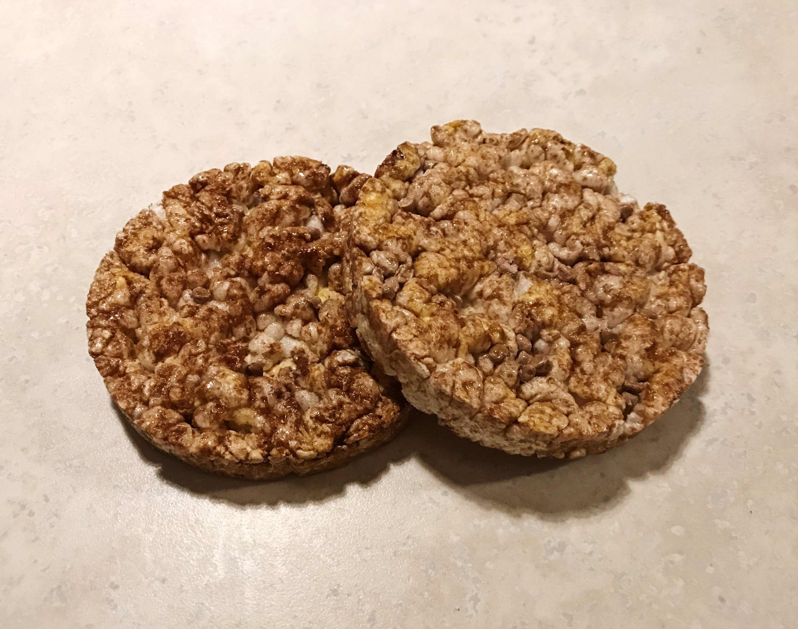

If you know me you know that my partner (Ben is his name in case you don’t know) is Australian. We live in Australia, or at least we’re in the process of trying to.
The past year and a half we’ve been together we’ve unfortunately had to spend a decent amount of time apart due to visa issues, and Ainsley’s birth which took place in Canada.
Long distance sucks, and it’s no secret that it’s very hard. Especially when you have a child together, that just adds a whole other element of shittiness…
But if I can offer any tips to people doing long distance these would be them;
Communicate
Sounds obvious but it’s the key to making long distance work. Since you aren’t together to share the big or little things that happen make you talk to each other. Tell your partner what’s going on in your day to day life. Make them feel like they aren’t completely out of the loop being so far away. This works both ways so make sure to always be asking your partner about their life as well. Make time each day to really talk to each other, if like me there’s a massive time difference make sure you guys both agree on times to talk that work for your schedules.
Don’t Hide Your Feelings
Don’t pretend everything is all sunshine and rainbows, because it’s not. Long distance blows and we all know it. Tell your partner your true feelings, so you guys can talk them through and work out issue.
Bottling up your emotions will just back fire down the road, and no one wants that. So be open and honest about your feelings, if you feel sad and shitty, let it out!
Send Pictures
No not the dirty kind you sickos (well I mean if you want.) But just sending pictures of things your doing, your face, things like that! It makes texting more personal. I ask for a picture of Ben’s face at least once a week cause I miss it.
Call when it’s something important
When it’s something exciting or important make sure to have the conversation over the phone. It makes the moment more personal and you are able to hear the persons emotions. Sometimes emotion gets lost in text, so talking via phone, FaceTime, Skype, can help make the moment more special or serious.
Don’t Give Up
I know it’s hard, and sometimes you may feel like it’s never going to work but trust me it will! Time apart is only temporary and in the big scheme of things it’s not that long when you compare it to spending a lifetime together. Something Ben and I always tell each other is that it’s short term pain for long term happiness. We may have to spend almost a year in total apart but we have so much of our lives left to be together!
If you really love the person, it’s totally worth it. And once you see them you cherish your time together that much more.
Hopefully if you’re in the same boat I am you can take something from this!
And don’t forget the famous saying, “distance makes the heart grow fonder.”
Winter Sucks
As the holidays start to approach that means so does the winter weather…
I’m a Christmas fan don’t get me wrong, I’ll jingle my bells all over town, I love Christmas.
But something I am not a fan of is winter, winter sucks.
This may be an unpopular opinion since I know tons of people who love winter and all the “fun” festive activities that come along with it, but not this girl.
I don’t ski, I don’t snowboard, I don’t snow shoe, I can’t skate, I don’t enjoy playing in the snow, being out in the snow, walking in the snow, hell I don’t even like looking at the darn snow! Aside from the obvious fact that winter is COLD, here are some reasons as to why exactly I hate this season so much.
Being outside in the snow makes everything wet. Having wet socks and wet mittens is for sure in my top five most hated things of all time. It’s nasty, uncomfortable, and a complete day ruiner if you ask me. I can’t be the only one who gets miserable once I can feel puddles in my boots…
Aside from getting wet from being in the snow, trying to do anything productive in the snow or cold is next to impossible. It’s makes every task at least 10 times more difficult. Pushing a stroller, going for a run, driving, literally anything outdoors sucks to have to do in the snow. And who wants to get stuff done in the cold? CRAZY PEOPLE THATS WHO. Never will you ever find me voluntarily doing something outdoors in the winter, sorry nope, not happening!
Now this next reason for my little hate on winter (ok maybe big hate on winter,) is just a personal issue but… I CANNOT STAND THE SOUND OF CRUNCHING SNOW. Yep, you read it right. The sound of walking in crunchy snow makes my head hurt, it physically bothers me to a point I will avoid it at all costs. For my entire life I can remember absolutely dreading snowfall because I knew it meant I’d have to walk in snow. As I’ve gotten older it doesn’t bother me half as bad as it used to but if there is a route that doesn’t involve me walking in snow you best believe I’ll be taking that way.
I hate bundling up. I’m not a huge fashion lover or someone with extremely good style, but I think everyone can agree winter fashion is not the greatest. There’s only so much styling you can do when it’s -25 degrees out. I’m sure some people look adorable in snow gear but not me, slap a pair of snow pants on me and I look like a nice plump sausage.
Now I’ve tried to enjoy winter, I’ve done the whole skiing, tubing, (trying to) skate, sledding, snowmobiling, and all that jazz. And it’s just not in the cards for me. Winter activities have zero appeal to me and I don’t find any of them worth freezing my ass off for, sorry snow bunnies.
I just hate being cold and wet, I hate winter sports and the sound of snow. So clearly winter has nothing to offer me (other than the winter drinks at Starbucks.)
Now all that being said, this is most likely my last ever winter here in Canada since I’ll be moving to Australia for good so…. Cheers!
Traveling With An Infant
Having a half Aussie baby, and trying to obtain a permanent visa myself has involved a lot of traveling to and from Australia. I feel like every couple months I’m on a plane. I by no means hate traveling, but traveling with a baby? Now that’s a different story.
Ainsley’s first long trip was at six weeks old, her second long haul flight was at four months, and her third will be when she’s around 6 and a half months! She’s travelled a total so far of about 60 hours, and by the end of the year will be at around 90 hours of travel time!
Ainsley saying bye to Dadda before our long flight back to Canada!
To be completely transparent with you all, I would avoid this at all costs if you plan on doing it solo. But if you must travel a long haul trip with your little one, here are my tips.
Fly with someone
Our first trip I luckily had my partner (Ainsley’s Dadda) with me! And let me tell you it was a world of a difference opposed to flying solo. If you can, definitely bring a spouse, family member, friend, or hell even a nanny. It’s so helpful to have an extra set of hands to help out while sorting through customs, dealing with baggage and even just to have someone to hold the little one so you can get some sleep on the plane
Ditch the diaper bag, get a backpack
This was a mistake I made the first time around, I used Ainsley’s diaper bag as her carry on and boy did I regret it! Lugging that thing on my arm while also having my own carry on to hold AND having a baby strapped to my chest was awful! Second time around I used a backpack and it was so much easier because I had a free hand (which is crucial when traveling alone with a baby.) Not to mention it was also way more comfortable rather than holding a bag on my arm the whole time and having to set it down every time I needed to do something.
You can never pack too many diapers
To me, the worst thing imaginable would be to run out of diapers while on a 16 hour flight or I mean any flight really… I can’t even fathom how shitty (pun intended) that would be. If you think you’ve packed a good amount, add 2 more.
Disinfectant and hand sanitizer are your bffs
Airports, planes, and public bathrooms are nasty and filled with germs. I’m no germaphobe but it’s common sense to know that these places are disgusting, and the last thing you want after a huge day or so of traveling is a sick baby. So just do yourself a favour and wipe everything down before your little one (or yourself) touches it. I always travel with disinfectant wipes, hand sanitizer, and disinfectant spray (they make a none aerosol one which is plane safe.)
Have all your tickets and travel documents in one easy access folder
There’s nothing worse than getting to the front of the line and fumbling through your bag to find your passport or ticket (especially if like me, your baby is screaming bloody murder.) Go to the dollar store, buy a sealable folder, and keep everything all together in one spot so you can easily find everything you need! Again, if your travelling alone this is key, since you won’t have anyone to dig through the bags for you
Ask for help
Don’t be afraid to ask people for help! Traveling with a baby is hard, especially if you are by yourself. People are generally nice enough to lend a hand to a mom with a crying baby that’s trying to chase after her moving luggage at baggage claim or who’s struggling to get her bag in the overhead bin. Typically people will offer, but if you have a bunch of A-holes on your plane just ask the flight attendants!
Ask for an open seat
Before boarding go to the service desk and ask if there are any seats that have an empty one next to it. If you have a baby they are usually pretty good with moving you to a seat with an empty one next to it. This is a life saver, having a seat to put all your stuff on or even so that the baby can lay down is so handy! And also no one wants to sit next to a baby… So it’s a win for everyone!
Look for flights with a good lay over time
This is something I didn’t think of the first time, so we were extremely rushed we almost missed our flight. Look for a flight that has a layover long enough that you will have time to feed and change the baby, and also get yourself situated, fed, and of course caffeinated. But a layover short enough that you aren’t sitting around in an airport waiting for hours and hours. I found 2.5hrs gave me just enough time to get everything done and get to my gate for pre boarding (and yes, since you have a baby you get to board first, score!)
Those are my top tips for traveling with a baby, like I said I’d avoid it if you have to do it alone, but if you have a partner coming with you it’s definitely manageable.
For those of you brave souls going solo with a baby on a long flight, I wish you luck! I’ve been there, and will be there again in about three weeks when we head back to Aus (yikes.) Make sure to have your Mamma on speed dial because your in for a meltdown or two…
Dealing With Change
The past five years of my life change has been non stop. My parents splitting up, moving away from home to university, entering treatment for an eating disorder, moving to Australia, and of course having a baby. I mean really, what else could life throw at me?
Prime example of how change can be positive, look at the beautiful pumpkin who’s now blessed my life
At some point in your life whether you like it or not, things will change. Regardless of big or small, change can be very hard to deal with
I used to hate change and tend not to cope well at all with any little change and especially not big changes. But learning to better deal with change has been very beneficial to me. I no longer get super anxious when things don’t work out as planned and am more accepting of new ideas instead of being so negative.
In this post I will give you my top tips on how to deal with the inevitable; change.
1. Recognise the Change
This may sound silly but before accepting or dealing with changes head on, you need to acknowledge the change.
2. Accept your Feelings
Change is not always easy or positive. Don’t avoid your emotions, listen to how you feel. Accept your feelings and become self aware of them. By doing this you allow yourself to understand and manage your emotions.
3. Create a Positive Mantra
Having things change that you have no control over is hard. But something I find helpful is to create a positive mantra to constantly reassure myself with. An example of one would be;
“I can get through this. It’s not my fault things change, but I will keep an open mind.”
4. Reach out
Going through changes are hard and sometimes very overwhelming. Never feel like you need to go through it alone. Reach out to friends and family to talk, vent, or just to get your mind off things. You’d be amazed to find when you reach out for help how actually helpful it can be. Often times we get into the mindset that we’re the only ones who deal with or feel a certain way but in reality a lot of the feelings we have and situations we encounter are more common than we think and by talking about them with like minded people it can be very helpful to put our mind at ease!
5. Only YOU control YOU
Lastly but most importantly keep in mind that the only person who controls you is you. Although everything around you is changing and life may feel like it’s upside down, you are the only person who controls the way you deal with things and how you react to situations. As hard as it may be try your best not to let the change in your life control you.
Those are the tips I have for you, and hopefully you find one or all of them helpful!
But in all honestly as many tips as I can give, everyone deals with change differently. Try to keep a positive outlook and think about all the good things that come from change. I mean think about it, if things in life never changed imagine where society would be today (oh boy…)
Staying On Track While Traveling
As someone who’s been bouncing between Canada and Australia I’ve done my fair share of traveling. It’s long, gruelling, and just not enjoyable in general. ESPECIALLY if you have a baby, imagine all the regular travel struggles multiplied by 100.
But don’t let the stress of traveling get you off track! Living a healthy lifestyle is important to me so even on travel days I like to do my best to stay on track! Here’s my best tips on how I do so;
Pack your own snacks
Instead of the pathetic little bags of sodium packed peanuts they give out on the plane, or stopping in the airport to grab something quick like chocolate, chips, or candy, I suggest coming with your own snacks! Not only is this better for you but WAY cheaper. You will have to check your specific airlines rules as to what is allowed but for the most part things such as granola bars, protein bars, nuts, dried fruits, rice cakes are all allowed! My general rule of thumb is ifs it’s in a package it’s probably safe. But like I said, make sure you double check with your airline!
Below will be some examples of my personal favourites but feel free to bring whatever healthy snacks you enjoy!
My all time favourite brand of granola bars are the KIND bars, they are low in sugar but still taste absolutely delicious These bars are DELICIOUS and can be bought in bulk at Costco!

Chocolate Caramel Rice Cakes, my favourite!Much healthier than the regular Ol’ potato chip and taste great!
Scope out healthier options
During your layover you may want to grab something to eat. Don’t fear, there are plenty of places you can find healthy options.
My favourite is subway and it also happens to be extremely common (and inexpensive.) Subway is very customisable and can be very calorie friendly! My Go-To is an oven roasted chicken salad with olives, tomatoes, cucumbers, red onion, and sweet onion dressing.
My Go-To from Tim Hortons is deffinately the oatmeal, it’s extremely filling which leaves me satisfied, gives me energy for the long hours of traveling with a baby and it’s good for me.
Lastly most airports have Starbucks, if you haven’t already make sure to check out my blog post about healthy Starbucks drinks. But as for food, the reduced-fat turkey bacon egg white sandwhich is amazing and isint crazy high in fat compared to others.
If none of these places work for you just do your best to make mindful decisions of what you order!
Get your steps in
Being sedentary on a plane for 15 hours sucks, nor is it good for you! Getting up and walking the aisles of the plane will not only allow you to get your steps in but will help with circulation and water retention to reduce the dreaded travel bloat and swelling!
HYDRATE
If you only take one piece of advice from this article let it be hydrate! If you do chose to eat the plane food which is typically higher in sodium hydrating will help flush the excess salt out of your system. Along with flushing your system, staying hydrated will also help with the water retention that comes with flying.
Love yourself
Life is all about balance, so if you feel like having a treat, do so but just in moderation! We’re all human and far from perfect so don’t stress if you do fall off track on travel day. Travelling is hard and stressful for the best of us, particularly if you’ve got a little one.
Hopefully you can take some tips from this post on your next trip to help stay on track with your healthy lifestyle even on travel days. Don’t forget healthy eating is not a diet it’s a lifestyle, so just do your best with what’s available to you!